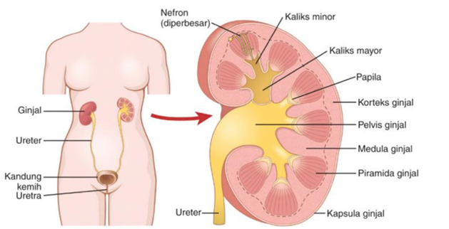
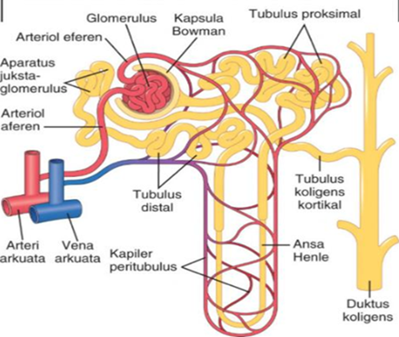

Sebagai manusia normal kita setiap hari pasti melakukan aktivitas buang air kecil. Air yang dikeluarkan pada saat buang air kecil disebut urine. Urine merupakan salah satu bentuk zat sisa metabolisme yang dikeluarkan oleh tubuh.
Begitulah peran sistem ekskresi yang berperan penting dalam mengeluarkan berbagai sisa zat hasil metabolisme tubuh yang beracun. Ginjal merupakan organ utama dalam sistem ekskresi yang berperan mengeluarkan berbagai zat sisa
metabolisme melalui urine. Lalu bagaimana struktur dan fungsi dari organ ginjal serta proses terbentuknya urine itu? Jawaban ini akan kalian temukan jawabannya dalam kegiatan pembelajaran ini.
1. Struktur Ginjal

Gambar 1. Sistem Urinaria Sumber Hall, 2019
Ginjal merupakan sepasang organ penting yang memiliki tugas utama untuk menyaring dan membuang limbah serta racun melalui urine. Ginjal memiliki bentuk yang menyerupai kacang merah dengan ukuran sekitar 10-12 cm atau ukuran ginjal
orang dewasa normal kira-kira sebesar kepalan tangan. Ginjal terdiri dari beberapa lapisan penyusun yang saling bekerja sama untuk melakukan sebagaimana fungsinya dan peranannya. Ginjal berjumlah sepasang yang terletak pada
kanan dan kiri tulang pinggang, yaitu di dalam rongga perut pada dinding tubuh bagian belakang.
Jika di potong secara melintang akan terlihat struktur ginjal seperti gambar pada gambar 1. Bagian luar ginjal disebut dengan korteks renalis yang tersusun atas jutaan nefron (unit penyaring darah), bagian bawah ginjal terdapat
medula renalis dan dibagian dalamnya terdapat rongga ginjal atau pelvis renalis yang banyak mengandung pembuluh-pembuluh untuk mengumpulkan hasil ekskresi. Setiap ginjal dilengkapi dengan pembuluh darah yang mengarah masuk
(arteri renalis) dan keluar (vena renalis). Berikut paparan mengenai bagian-bagian organ ginjal:
Korteks
Korteks merupakan bagian terluar ginjal yang didalamnya terdapat satuan struktural dan fungsional terkecil yang disebut nefron. Korteks ginjal umumnya dikelilingi oleh kapsul renal dan lapisan lemak yang berfungsi untuk
melindungi struktur dalam bagian dalam ginjal. Nefron adalah salah satu bagian penting pada ginjal. Bagian ini dapat mengambil darah, memetabolisme nutrisi, dan membantu untuk mengeluarkan produk limbah dari darah yang
telah disaring. Setiap nefron terdiri dari badan malpighia atau badan renalis yang tersusun atas glomerulus dan kapsula bowman Satu buah ginjal manusia mengandung kurang lebih 1 juta nefron. Adapun bagian-bagian dari
nefron antara lain:

Gambar 2. Struktur Nefron Sumber Hall, 2019
Badan malphigi adalah bagian nefron yang memuat glomerulus (gulungan pembuluh darah) yang diselubungi oleh kapsula Bowman. Glomerulus berfungsi untuk menyaring zat-zat dalam darah yang masih dibutuhkan oleh tubuh untuk
kemudian diserap kembali. Sementara itu, kapsula Bowman berfungsi untuk menampung sementara hasil penyaringan urine oleh glomerulus dan membawanya ke tubulus kontortus proksimal.
Tubulus merupakan rangkaian pembuluh yang terhubung dengan badan Malphigi, yang terdiri dari tubulus kontortus proksimal dan tubulus kontortus distal. Tubulus kontortus proksimal adalah saluran berliku yang berada setelah
glomerulus. Fungsi tubulus proksimal pada nefron adalah melakukan penyerapan kembali (reabsorpsi) zat yang diperlukan oleh tubuh, seperti asam amino.Tubulus kontortus distal berfungsu menjalankan proses augmentasi
sehingga urine menjadi lebih pekat dan siap dikeluarkan tubuh melalui uretra.
Medula
Medula merupakan bagian dari ginjal ini terdiri dari lengkung henle serta piramida renal, yaitu struktur kecil yang berisi nefron dan tubulus. Tubulus inilah yang nantinya berfungsi mengangkut cairan yang masuk dan mengeluarkan
urine dari ginjal. Tubulus-tubulus yang menyusun nefron adalah tubulus proksimal dan tubulus distal.
Pelvis
Pelvis merupakan ruang berbentuk corong dan terletak di bagian paling dalam dari renal. Bagian dari ginjal yang satu ini berfungsi sebagai jalur untuk cairan dalam perjalanan ke kandung kemih.
Untuk lebih memahami struktur pada ginjal, mari simak video berikut dengan seksama.